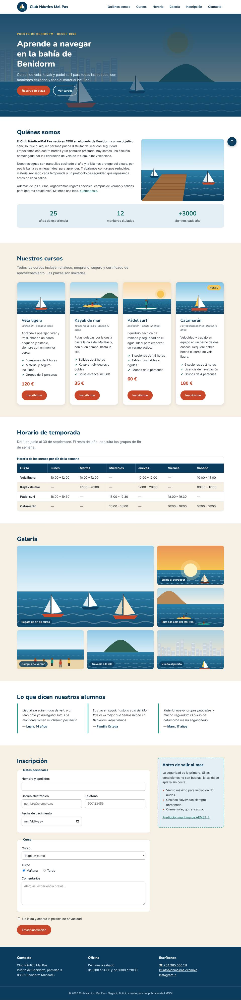
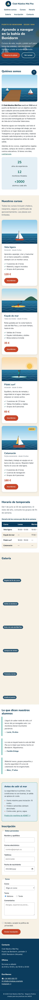

- UP
- UP3
- Criterios
- RA2 · 2f, 2h
- Duración
- 3 sesiones
- Agrupamiento
- Individual
- Entrega
- Aules · ZIP + URL del repositorio
- Tipo
- Desarrollo · formativa
Objetivos
- Explicar la función de la etiqueta
meta viewport. - Reorganizar una hoja de escritorio en mobile first con media queries
min-widthenem. - Elegir los puntos de ruptura donde se rompe el diseño, no por dispositivos concretos.
- Cambiar valores con variables dentro de una media query.
- Añadir transiciones moderadas y respetar
prefers-reduced-motion. - Validar y auditar la web con el validador del W3C y Lighthouse (CE 2f).
Recursos
- Punto de partida: tu PP 3.5. La serie entera trabaja sobre un único fichero HTML, la web del Club Náutico Mal Pas (descargar en ZIP), que no se modifica: cada práctica añade una capa a la misma hoja
css/estilos.css. - Teoría de la UP3, secciones 10 y 11 (diapositivas 74 – 87).
- Ejemplo guiado EG 3.3 · Portada adaptable.
- Laboratorio CSS: diseño adaptable y variables y transiciones.
- Plantilla LEEME-plantilla.md.
Resultado esperado
Así debe quedar la página al terminar esta práctica (diseño completo). Desplaza las capturas para verla entera.


1Continúa tu web
Copia la carpeta de tu práctica anterior como lmsgi/UP3/PP3.6/ en tu repositorio y sigue trabajando sobre la misma hoja css/estilos.css. No cambies el HTML. Si la práctica anterior no te funciona, pide al profesor su hoja de estilos para no quedarte atrás.
Comprueba que el <head> tiene <meta name="viewport" content="width=device-width, initial-scale=1.0"> y explica en el LEEME.md qué pasaría en un móvil sin ella.
2Diagnóstico a 375 px
Activa el modo dispositivo de DevTools (Ctrl + Mayús + M) a 375 px y apunta en el LEEME.md todo lo que no funciona. Deberías encontrar, como mínimo: la galería que se desborda (PP 3.5), la cabecera fija que ocupa media pantalla, la foto flotante que deja una columna de texto estrechísima, el formulario y el aviso en dos columnas y títulos demasiado grandes.
Puedes ver cómo responde una maqueta a distintos anchos en el laboratorio de diseño adaptable.
3Primero el móvil
En mobile first, las reglas sin media query son las del móvil. Cambia en su sitio de la hoja:
h1a 2.125rem yh2a 1.625rem;.portadaconpadding-block: 3.5rem.- El relleno de las secciones pasa a una variable que cambiará en la media query:
:root {
--espacio-seccion: 2.5rem;
}
.seccion {
padding-block: var(--espacio-seccion);
}- La cabecera deja de ser
stickyen el móvil, y logotipo y menú se centran (justify-content: centeren.cabecera__filay en.menu ul). - La foto de «Quiénes somos» deja de flotar: vuelve a ser un bloque de todo el ancho.
- La galería no aplica el
span 2y el primerfieldsetno es una rejilla. - La inscripción es una sola columna y el aviso de seguridad va antes del formulario, solo con áreas:
grid-template-areas: "meteo" "formulario";. El aviso no essticky.
4Media queries
Al final de la hoja, de menor a mayor, añade las media queries que recuperan el diseño de escritorio. Pon en cada una solo lo que cambia:
/* Tableta pequeña: 640 px */
@media (min-width: 40em) {
/* foto flotante al 40 %, foto destacada 2 × 2, datos personales en dos columnas */
}
/* Tableta y portátil: 768 px */
@media (min-width: 48em) {
:root {
--espacio-seccion: 4rem;
}
/* tamaños de h1 y h2, relleno de la portada, cabecera sticky y space-between */
}
/* Escritorio: 896 px */
@media (min-width: 56em) {
/* inscripción en dos áreas (2fr 1fr) y aviso sticky */
}Los puntos de ruptura se eligen donde tu diseño se rompe: arrastra el borde de la ventana y justifica los tuyos en el LEEME.md. Usa em para que respeten el tamaño de letra que haya elegido el usuario.
5Transiciones
Añade movimiento suave y corto, solo a propiedades que el navegador anima sin esfuerzo (transform, opacity, colores):
.botony.menu a:transitiondel fondo, el color ytransformen 0.2s; el botón sube 2 px al pasar el ratón (translateY(-2px))..tarjeta: sube 4 px y aumenta la sombra al pasar el ratón (0.25s).- Galería: la foto se amplía un 5 % (
scale(1.05)) dentro de su celda; el.galeria__itemnecesitaoverflow: hidden. html { scroll-behavior: smooth; }para que los saltos del menú sean suaves.
Y respeta a quien ha pedido menos movimiento en su sistema:
@media (prefers-reduced-motion: reduce) {
html {
scroll-behavior: auto;
}
*,
*::before,
*::after {
transition-duration: 0.01ms !important;
}
}Ajusta duraciones y curvas en el laboratorio de transiciones.
6Prueba en todos los anchos
Comprueba la web a 320, 375, 768, 1024 y 1440 px. En ningún ancho debe haber scroll horizontal (salvo dentro de la tabla), ningún texto cortado ni ningún elemento solapado. Prueba también el zoom del navegador al 200 %.
7Valida y audita
Valida la hoja con el validador CSS del W3C y el HTML con el validador HTML: 0 errores. Las advertencias sobre variables CSS son normales; explica en el LEEME.md por qué aparecen.
Ejecuta Lighthouse en modo móvil y anota Rendimiento, Accesibilidad y Buenas prácticas. Objetivo: Accesibilidad ≥ 90.
8Publica
Commit (PP3.6: diseño adaptable y transiciones) y publicación en GitHub Pages. El diseño del club está terminado: compara la primera captura de la serie (sin estilos) con la final y escribe tres conclusiones sobre lo que aporta cada capa.
Niveles de realización
Básico
Pasos 1 – 4, 7 y 8.
Estándar
Todos los pasos, con Lighthouse accesibilidad ≥ 90 y los puntos de ruptura justificados.
Ampliación
Modo oscuro con @media (prefers-color-scheme: dark): crea variables con nombres de función (--fondo, --superficie, --texto…) en lugar de nombres de color y redefínelas en la media query. Añade una hoja de impresión con @media print que oculte el menú, el formulario y el botón «volver arriba».
Antes de entregar, comprueba que…
- La hoja es mobile first: las reglas sin media query son las del móvil y las media queries usan
min-widthenem. - A 375 px no hay scroll horizontal, la cabecera no es fija y el aviso de seguridad va antes del formulario.
- A partir de 768 px la cabecera es fija y el diseño coincide con el de la PP 3.5.
- El espacio entre secciones cambia con una variable redefinida en una media query.
- Botones, tarjetas y fotos tienen transiciones suaves que desaparecen con
prefers-reduced-motion. - Validadores CSS y HTML: 0 errores. Lighthouse accesibilidad ≥ 90.
- La web está publicada en GitHub Pages.
- Declaración de uso de IA en
LEEME.md.
Entrega
Comprime la carpeta PP3.6 (con index.html, css/, img/ y LEEME.md) como PP3.6_Apellido_Nombre.zip, súbela a Aules y escribe en el comentario la URL de tu repositorio.
Uso de inteligencia artificial. Puedes usar asistentes de IA para entender un error o resolver una duda, pero no para hacer la práctica por ti. Si los usas, decláralo en el fichero LEEME.md de tu entrega (qué herramienta, para qué y qué cambiaste tú). Debes poder explicar y defender todo lo que entregues (instrumento IE6). Presentar código generado sin declararlo supone un 0 en la práctica (PD, apartado 6.5).
Evaluación
Práctica formativa de la serie progresiva de la UP3: no tiene nota propia, se revisa en clase con la lista de comprobación y prepara las prácticas calificables (PR 3.1 – 3.5) y el Proyecto 3. Trabaja el criterio 2f, 2h del RA2. El profesor puede pedirte que expliques cualquier regla de tu hoja (IE6).